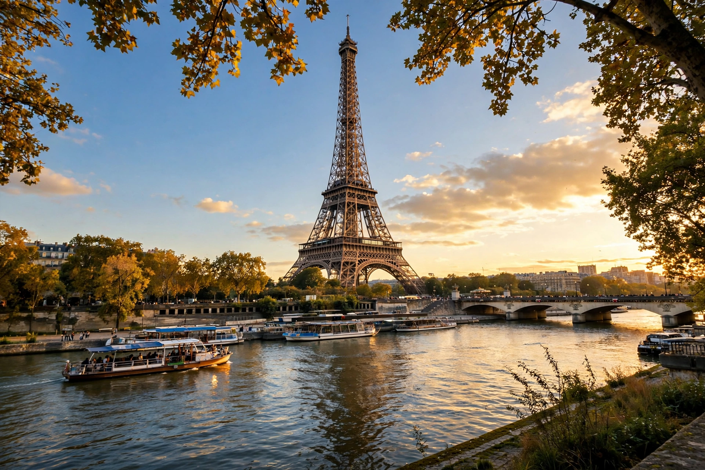

Eiffel Tower

| Location | Champ de Mars, Paris, France |
|---|---|
| Designer | Gustave Eiffel; architects Maurice Koechlin, Émile Nouguier, Stephen Sauvestre |
| Construction | 1887–1889 |
| Height | 330 m (1,083 ft) including antennas; 300 m to roof |
| Material | Puddled iron (wrought iron) |
| Weight | 10,100 tonnes |
| Visitors | About 6–7 million per year |
The Eiffel Tower (French: Tour Eiffel) is a wrought-iron lattice tower on the Champ de Mars in Paris, France, named after the engineer Gustave Eiffel, whose company designed and built it. Constructed from 1887 to 1889 as the entrance arch to the 1889 World's Fair (Exposition Universelle), held to celebrate the centenary of the French Revolution, it was initially criticised by many of France's artists and intellectuals but has become a global cultural icon of France and one of the most recognisable structures in the world.
Design and construction
The tower is 330 metres tall, about the height of an 81-storey building, and was the tallest human-made structure in the world for 41 years, until the Chrysler Building in New York was completed in 1930. It is made of 18,038 prefabricated iron pieces joined by 2.5 million rivets and weighs 10,100 tonnes. Its piers rest on foundations anchored in the banks of the Seine, and the first floor stands 57 metres above the ground, the second at 115 metres, and the summit platform at 276 metres, accessible by lifts and stairs.
History
Planned as a temporary exhibit to be dismantled in 1909, the tower was saved by its usefulness for radio telegraphy; during the First World War its transmitter intercepted enemy communications. The names of 72 French scientists, engineers and mathematicians are engraved on its sides. The tower has three levels for visitors, with restaurants on the first two. It is repainted every seven years with about 60 tonnes of paint, currently in a shade called "Eiffel Tower brown." At night it sparkles with 20,000 flashing lights each hour on the hour.
Tourism
The Eiffel Tower is the most-visited paid monument in the world, receiving close to seven million visitors a year, and by 2017 it had welcomed roughly 300 million visitors since opening.